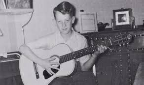

Elvis Aaron Presley was born January 8,1935 in Tupelo,Mississipp. The family did not line richly Veron(elvis dad) changed one odd job for another.The family had to rely on the government food aid or help from the neighbors.The family lost their name in may 1938 Elvis was only 3 Year old. In November 1948 he and his family moved to memphis.


Elvis received his first guitar when he was 11, and more many years that was his only guitar
Presley performed in publc for the first time at the Bon Air Club on July 17. Elvis still performed with his first guitar he played at the overton park shell at the end of the month.
That performance become special beacuse of Elvis dance. He performed "Rubber Legs" for the first time but soon it would be he's most recongnizable signature movement.